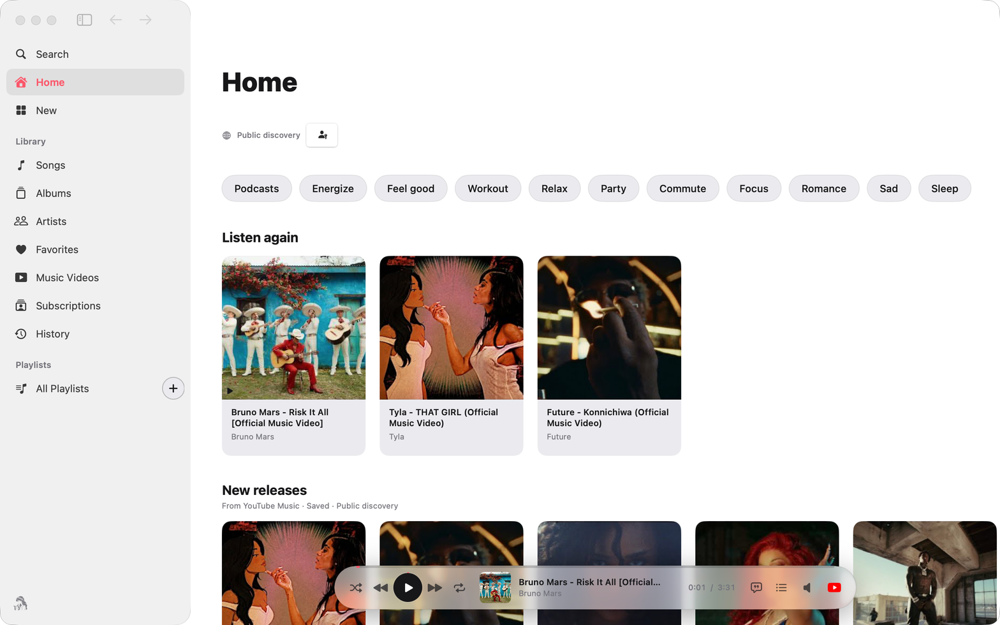

Polyhymnia
The core Muses experience
Music, playlists and podcasts, with an artwork-led library, a thoughtful queue, cover or vinyl Now Playing, available lyrics and native menu-bar controls.
Signed and notarized Mac release available.
A native home for music and playlists. Explore your collection, stay in the flow and make room for the song — on Mac, iPhone, iPad and Windows.
macOS 14+ · iOS 18+ · Windows 11 · Open source
At the heart of Muses is Polyhymnia on the Mac. Erato and Euterpe bring the same vision to an experience shaped for each device.
The core Muses experience
Music, playlists and podcasts, with an artwork-led library, a thoughtful queue, cover or vinyl Now Playing, available lyrics and native menu-bar controls.
Signed and notarized Mac release available.
Your collection, on the move
Search, saved videos, favorites, playlists, queue, notes and time bookmarks, with adaptive iPhone and iPad layouts.
Currently in beta. The Public edition pauses video playback in the background. Experimental features and installation requirements vary by edition.
Muses for the Windows desktop
An artwork-led library, a floating player, a persistent queue, available lyrics, on-demand video and Windows media and tray integration.
In development. A downloadable Windows version is not yet available. Features and appearance continue to evolve.
Choose a view or use the arrow keys.

Artwork leads the way, while the floating player keeps your current song close.
A tour of Muses on macOS. Use the tabs or arrow keys to explore; playback happens in the application.
Organize playlists, browse songs, albums, artists and videos, and keep favorites and listening history together.
Previous, Next, Up Next, repeat and shuffle work with the collection you started from. Control playback from the app, menu bar, keyboard or system media keys.
Open Now Playing for artwork and available lyrics, switch to vinyl, watch the video on demand, or return to a podcast where you left off.
Download the Mac release, explore the iOS beta, or follow the Windows port.